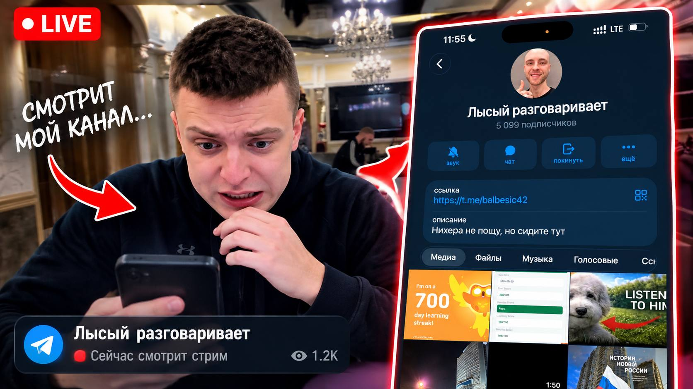

Мелстрой заметил «Лысого» на стриме и разнёс его в прямом эфире
Автор телеграм-канала «Лысый разговаривает» попал в эфир к стримеру — после этого под постами канала появились тысячи негативных реакций.

Во время ночной трансляции Мелстрой, по данным «Воздуха», случайно наткнулся на канал «Лысый разговаривает» (5 099 подписчиков). Описание канала — «Нихера не пощу, но сидите тут» — стример зачитал вслух несколько раз.
«Это что вообще? Чат, идите поставьте ему реакции. Все знаете какие»
Уже через несколько минут под постом «Первый день лета (не нашёл пикчу)» появились тысячи реакций. Источники в чате утверждают, что зрители действовали организованно.
При этом пост набрал всего 36 просмотров. Эксперты называют это соотношение «беспрецедентным для русскоязычного Telegram». Два сердечка, по неподтверждённым данным, поставили мама автора и он сам.
На момент публикации владелец канала от комментариев отказался. В последнем посте он написал: «Хороший момент чтоб сюда что-то написать» — однако так ничего и не написал.
«Воздух» продолжает следить за ситуацией. Материал будет дополняться.